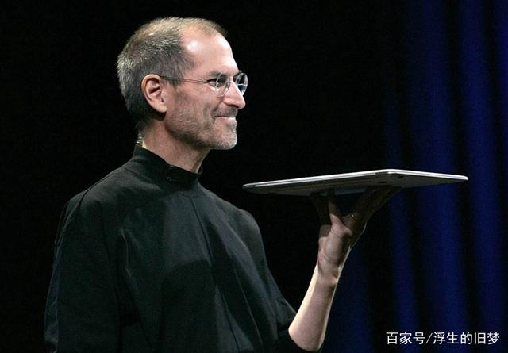
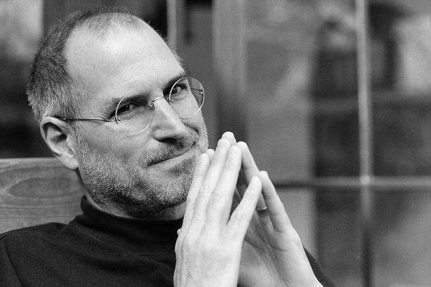
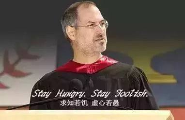

史蒂夫·乔布斯1955—2011，美国发明家、企业家、美国苹果公司联合创办人。
一个桀骜不驯的天才 ，把陷入绝境的苹果（一年亏损10亿美元）在第二年盈利3亿美元。

与同是互联网巨头的 比尔·盖茨相竞争，两人亦敌亦友，是宿敌也是知己

他的创造，影响了大多数人的生活，让整个电子行业有了巨大进步。他所做的，改变世界。

用一句乔布斯演讲后被我引之为的座右铭："Stay Hungry,Stay Foolish."